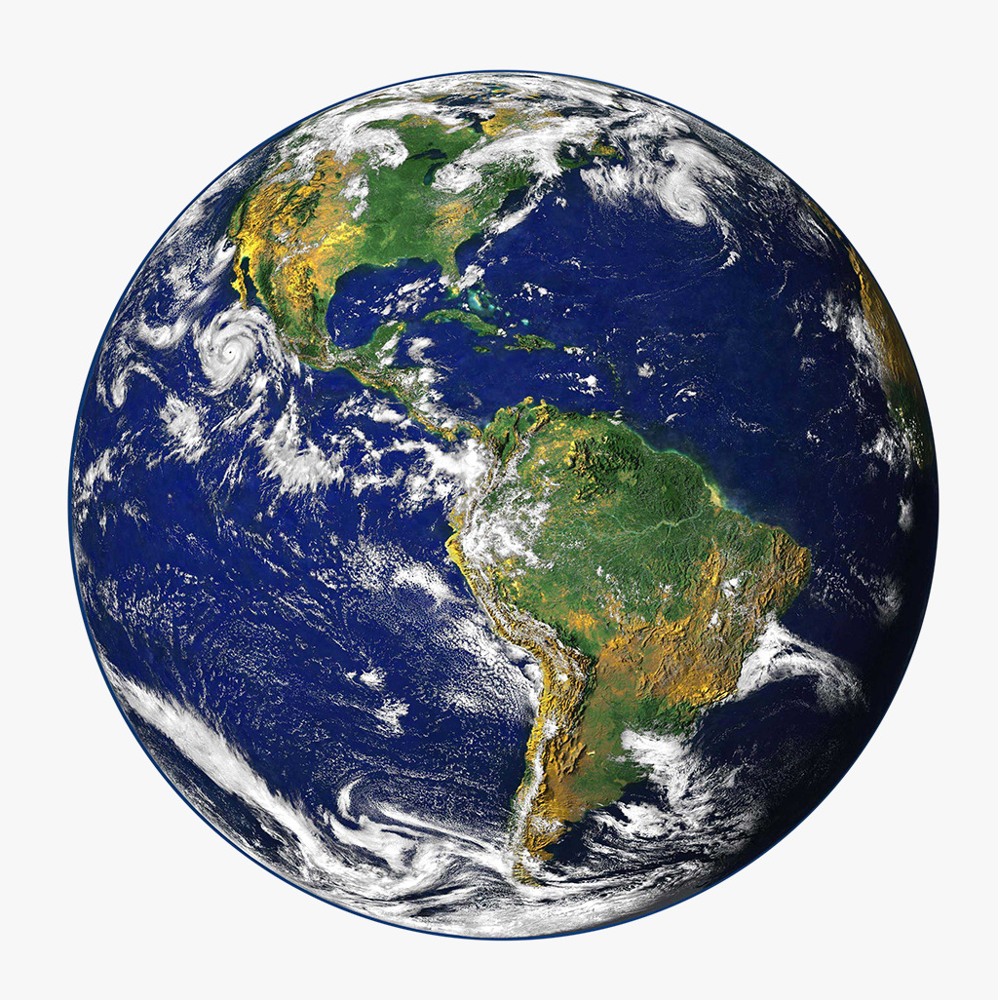

Discover our Planet!
I have created two types of maps
In the Map it is possible to calculate given routes to show the weather of the routes and to display these
routes
individually or together on the map
In the Geojson-Map it is possible to add your own geojson object to the map or to create a new one by drawing
into
the map.
Everything is possible! Just visit the category "Map" and "Geojson-Map" which can be found in the navbar at
the
top of the website.
